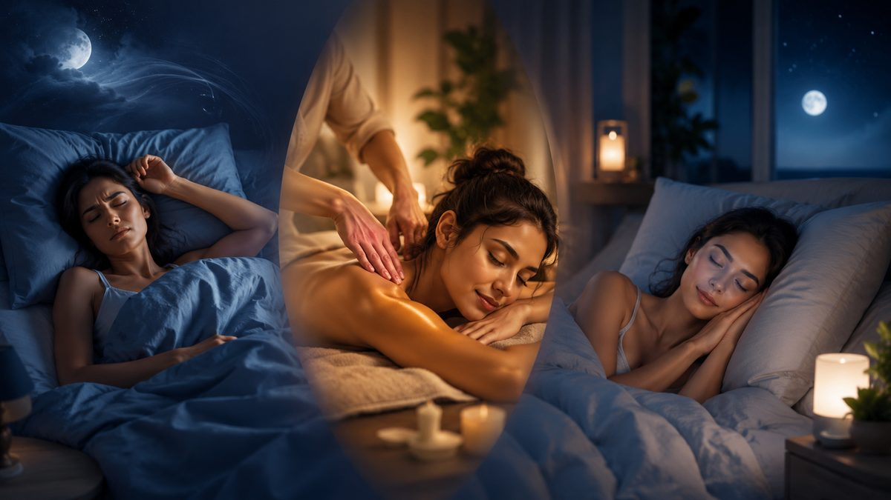

‘피곤한데 잠은 얕다’, ‘누워도 머리가 안 꺼진다’는 분이 늘고 있습니다. 마사지가 수면에 도움이 된다는 이야기는 많지만, 과장 없이 ‘어디까지 사실인지’가 궁금하실 겁니다. 67 마사지 현장 경험과 일반적으로 알려진 원리를 바탕으로 솔직하게 정리했습니다.
우리 몸은 긴장하면 교감신경이, 쉴 때는 부교감신경이 우세해집니다. 일정한 압의 부드러운 마사지는 몸을 ‘쉬어도 된다’는 상태로 전환시키는 데 도움을 줍니다. 호흡이 느려지고 근육의 지속 수축이 풀리면, 잠들기 좋은 몸의 조건이 만들어집니다. 관리 중 잠드는 분이 많은 것도 이 때문입니다.
스트레스로 어깨가 굳고 턱·뒷목이 뭉친 상태에서는, 정신은 자려 해도 몸이 ‘경계 모드’를 풀지 않습니다. 이런 ‘신체 긴장형’ 수면 문제에는 목·어깨·두피 주변을 이완시키는 관리가 체감 효과가 큰 편입니다. 향에 민감하지 않다면 라벤더 계열 아로마를 곁들이면 더 차분해집니다.
마사지는 ‘긴장으로 잠들기 어려운’ 상태를 돕는 보조 수단이지, 불면증의 치료가 아닙니다. 수면무호흡, 만성 불면, 우울·불안에 동반된 수면 문제는 원인 관리가 우선입니다. 한 달 이상 수면 장애가 이어지거나 일상에 지장이 크다면, 마사지에만 기대지 말고 수면클리닉·전문의 상담을 권합니다.
한 번의 관리로 그날 밤 잘 자는 경험도 의미 있지만, 진짜 변화는 ‘몸이 이완되는 상태’를 반복 학습할 때 옵니다. 주기적인 이완 관리와 규칙적인 취침 시간, 가벼운 스트레칭을 함께 가져가면 수면의 질이 서서히 안정됩니다.
마사지 단독보다, 이완 관리 뒤 곧바로 따뜻한 샤워→낮은 조명→가벼운 호흡으로 이어지는 ‘흐름’을 만들면 효과가 큽니다. 몸이 ‘이 순서 다음엔 잠’이라고 학습하기 때문입니다. 야간 출장마사지를 받는 분들이 그날 유독 깊게 잤다고 말하는 데는 이런 흐름의 영향도 큽니다.
‘몸은 피곤한데 머리가 안 꺼지는’ 신체 긴장형인지, 아니면 생각·걱정이 끊이지 않는 심리형인지에 따라 접근이 달라집니다. 전자는 이완 관리의 체감이 크고, 후자는 관리와 함께 심리적 원인 관리가 병행되어야 합니다. 어느 쪽이든 한 달 이상 지속되면 전문가 상담을 권합니다.
교대 근무로 낮에 자야 한다면, 암막으로 빛을 차단하고 소음을 줄이는 것이 핵심입니다. 몸은 어두울 때 더 잘 쉬기 때문입니다. 낮잠은 20~30분 이내로 짧게 두어야 밤잠을 방해하지 않습니다. 야간 근무 후 몸이 ‘경계 모드’로 굳어 잠이 안 올 때는, 자기 전 목·어깨를 이완하는 가벼운 관리가 전환에 도움이 됩니다. 다만 수면 리듬이 장기간 무너졌다면 전문가 상담을 권합니다.
※ 본 글은 일반적인 컨디션 관리·이완을 위한 정보이며 의료 행위나 진단·치료가 아닙니다. 디스크·염좌·골절·임신 중 통증 등 의학적 증상이 있다면 마사지 전에 의사·물리치료사 등 전문가와 상담하시기 바랍니다.